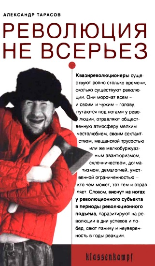
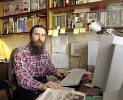
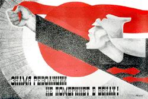
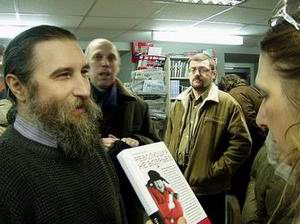
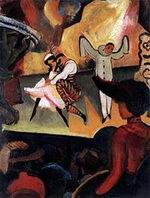

Александр Тарасов • Революция не всерьез • klassenkampf • 14.12.2005

Революции – вид социальной медицины. Они лечат общество от застарелых недугов. И точно так же, как и в деле врачевания, в деле революции не обходится без шарлатанов, в том числе и таких, которые не только морочат головы окружающим, но и сами искренне уверены, что опасны для старого мира и могут создать новый. Это квазиреволюционеры. Кто они, почему они существуют и как их отличить от революционеров настоящих, рассказывает в книге “Революция не всерьез” содиректор Центра новой социологии и изучения практической политики “Феникс” Александр Тарасов. Это – первая книга в России, специально посвященная данной теме. Книга адресована социологам, политологам и культурологам, а также всем молодым духом читателям, интересующимся политикой и особенно революционной борьбой.
ПРЕССА И КОНТЕКСТ
Революция не всерьез (Нестор Познанин, Газета “Лимонка” № 290, 14.01.2006)
Любопытную книгу написал Александр Тарасов. Точнее составил, так как большая часть труда “Революция не всерьез” это повторение более раннего (1998 г.) текста “Левые в России”. Примерно половина книги посвящена российским/советским левакам всех мастей и типов, от анархистов до “левых демократов”. Ужасающе подробно расписаны все заседания и совещания, мельчайшие штришки идеологий, лидеры и вожди, непонятки, склоки, сплетни… В общем все то, что этих леваков и угробило уже в начале 21-го века.
“Межлевацкая” полемика – дело тягучее и неблагодарное, но как исторический труд – книжка очень полезная. Левый спектр осмотрен тщательно и придирчиво. Замечательную главу “Обиженным” рекомендую прочесть и всем современным левакам, так как, к сожалению, она и сейчас очень актуальна.
Второй раздел “Революции не всерьез” – это наше настоящее и недавнее прошлое “радикально левой сцены”. Время “путинщины” то есть. “Чистые” леваки вымерли, о них, поэтому бегло. Зато пишет Тарасов о НБП, и, в принципе, справедливо пишет. Целую главу пишет. Что вот, мол, идут в нацболы “от безысходности” и что “НБП это скорее стиль жизни”. Что партия не отягощает себя идеологией, что заняла свою нишу в современном политическом мире. Что НБП фактически единственная реально функционирующая партия.
Подтекст книги – выявление и разоблачение, как автор их называет, “квазиреволюционеров”. То есть тех, кто просто (осознанно или нет) “мешается под ногами” у революции. Эта задача выполнена целиком. Всех кого надо, Тарасов “заклеймил”: и Исаева и Тупикина и Шубина (целая глава!) и троцкистов с маоистами. Оставшиеся иллюзии осыпаются быстро.
В книге лишь один недочет. Не сделан четкий и справедливый вывод. А он вполне мог бы быть таким: в России начала 21-го века нет по-настоящему революционных партий, движений и деятелей (включая, боюсь, и самого А. Тарасова). Нет и видимо, не будет. Кроме НБП. Все ценное и живое из мира леваков перешло к нам. Вся соль марксизма-сталинизма-ситуационизма и прочих идеологий, все можно найти в НБП. А все “квазиреволюционеры” пусть кусают локти – настоящая сила революции именно в нацболах.
Никто кроме нас.
Тарасов. А. “Революция не всерьез” (М. Вороновский, ГКР «Красный Клин», 29.01.2006)
Книга Александра Тарасова «Революция не всерьез» еще не успела толком поступить в продажу, а автор уже получил в ухо от очередного обиженного «анархиста», Влада Тупикина. Сайт Aglob.ru вместо рецензии печатает список тех, для кого книга не предназначена. В первую очередь для гошей. Один из администраторов Белорусской Индимедии цитирует статью товарища Тарасова «Молодая левая России: год 2002»: «Самым несерьезным течением являются анархисты. Когда-то, во времена «перестройки», анархисты имели на территории России довольно крупные и мощные организации, выпускали массу периодических изданий (журнал «Община» долго считался лучшим неформальным журналом), вели активную пропаганду, вызывали интерес и уважение у молодежи. Все это в прошлом. Маленькие группки анархистов, действующие сегодня в России, носят опереточный характер, никому не страшны, и будущего у них нет.
Изредка выпускаемые анархистами издания поражают убогостью языка (зачастую русский литературный язык в них подменен панковским сленгом), декларативным тоном, узостью тем, инфантилизмом (что, впрочем, неудивительно, поскольку рассчитаны они в основном на подростков и зачастую такими же подростками делаются) и интеллектуальной скудостью. Это легко объяснить: та немногочисленная молодежь, которая приходит сегодня в анархистские группы, в основном состоит из панков (или так называемых припанкованных), обычно не блещущих интеллектом, плохо учащихся, умственно и эстетически неразвитых. Вдобавок ко всему молодежная анархосреда сильнейшим образом поражена пьянством и наркоманией». И приходит к выводу: «Если кому интересно читать то же самое, только на 500 страницах – флаг в руки».
Мне было интересно, и на то у меня были веские основания.
Первая часть книги представляет собой новую редакцию главы из книги товарища Тарасова «Левые в России: от умеренных до экстремистов», посвященной левакам. К левакам автор относит всех, кто отрицательно относится Сталину и партийной преемственности ВКП(б)-КПСС, т.е. анархистов, «новых левых», «пролетаристов» и троцкистов. На наш взгляд термин достаточно размыт, т.к. часть сталинистов (маоисты, ходжаисты) отрицают свою преемственность к КПСС после 1952-1956 года, а некоторые, ведущие свою традицию от «Пролетарской Левой» во Франции, на уровне идеологии близки к «новым левым» (в Минске это маоисты из ГКР «Красный Клин»). Глава охватывает период с конца 80-х по конец 90-х – расцвет леворадикального движения в России на постсоветском пространстве. Опыт выпуска первых печатных изданий, формирование идеологии, образование основных ветвей движения, в частности выделение из анархистов движения «новых левых», взаимодействие с профсоюзами и самостоятельное создание профсоюзов, первые экологические и крупные уличные акции. Тарасов все это скрупулезно изучил и сложил в книгу. Между строк мы находим наброски анализа – почему не вышло. Кризис идеологий, кризис практик, кризис структур… В этом же плане интересна и прилагающаяся полемика с «обиженными». Ревизионист Шубин, прошедший последовательный путь от анархизма Бакунинского образца до работы на Немцова, решил уличить Тарасова во лжи. Тем же путем сейчас пошел Тупикин. Оказывается работа в газете «Реакция» совместима с анархизмом, а книга Тарасова, в которой он пишет, что анархист Тупикин поставляет идеологию для «нашистов», совместима только с тем, чтобы дать автору в ухо.
Вторая часть обращается к 2000-2002 году. Полемика вокруг КПРФ, появление у НБП более-менее четкой идеологии, образование Российской Маоистской Партии (это уже вторая, на этот раз аутентичная волна маоизма в России, первыми были анархо-маоисты из ИРЕАН). Данные события малозначимы, т.к. здесь все прозрачно, многие, в том числе и я, были включены в эти события. Но статьи Тарасова еще раз фиксируют кризисное состояние российской и, косвенно, постсоветской левой. Это зеркало, показывающее нам наше истинное лицо.
Третья часть – истории из жизни западных квазиреволюционеров: ситуационалисты и Вопящий Лорд Сатч. Те, кто знаком с историей, знают, что в Майских событиях 1968-го во Франции участвовали в первую очередь анархисты, «новые левые», троцкисты, маоисты из «Пролетарской Левой», воспитанные на Сартре, Марксе, Ленине Мао, Троцком, Райхе, Маркузе. Ги Дебор и Ванейгем это лишь частный случай, не имевший широкого распространения. Но в Мифе о Красном Мае первое место странным образом отведено именно ситуационалистам. Сейчас все ситуационалистские практики поглощены буржуазным «обществом спектакля», против которого ситуационалисты выступали. Буржуа, торгующий майками с Че и надписями «СССР» – ситуационалист наоборот.
Четвертая часть книги представляется менее интересной. О том, кто такой Якушев мы знаем давно, с ним и Баумгартеном связан появившийся в 2000-х годах термин «красный путинизм». Для того, чтобы лучше понять всю логику «красных путинистов» (для РБ сейчас актуален «красный лукашизм» КПБ, АКМ, НБП, КПСС и косвенно ВКПБ), стоит прочитать статью Дитера Якобса «Гитлер, империализм и социал-демократы» (http://www.maoism.ru/articles/Gitlutin.htm). Илья Стогоff интересен только тем, что кусками перепечатал и переврал книг Тарасова «Левые в России: от умеренных до экстремистов» (забавно, но именно Стогоffская «Революция сейчас» с воодушевлением принята некоторыми белорусскими, да и российскими левыми, не имевшими возможности читать оригинальную версию).
Книга товарища Тарасова о российских квазиреволюционерах, но для белорусов она не мене важна. Не имея собственного опыта, мы часто говорим о том, что противостоим системе. А если присмотреться. Член ЦК ВКПБ Зеликов, считает, что двуязычие в РБ – заслуга ВКПБ. Без комментариев. Лидер КПСС в Беларуси Школьников считает, а вместе с ним и АКМ, что коммунисты должны выискивать «неправильных» бюрократов и стучать на них властям (читай Лукашенко). КПБ обращается к Лукашенко – выставьте свою кандидатуру на президентские выборы. АКМ деидеологизированная пророssийски настроенная молодежь, не нашедшая ничего лучше, чем облить дверь офиса БНФ краской. Мелкая склока между политическим импотентами. БНФ хотя бы получила от ЕС деньги за работу во вредных условиях, а что выиграл АКМ? Глушаков с плакатом «Долой самодержавие!». А почему не «Смерть рабовладельцам!»? Понятно, что это абстракция, но она отражает уровень абстрагированности от реальных социально-экономических процессов в РБ. «Разам!» застыло на уровне XIX века. Автономное Действие – драки с футбольными фанатами, НБП, АКМ (членов которого окрестили «красными фашистами»), немногочисленными фашистами. На уровне практики – анархо-гопничество, на уровне теории увязание в контркультуре и склонность к самоизоляции, в том числе и от рабочих. «Красный Клин», видимо самая пишущая и читающая секта в РБ, но секта. Самое главное, что нам удалось сделать – уйти из ВКПБ. При наличии четкой идеологии, большие проблемы с практическим наполнением.
Единственное, что нас всех извиняет – мы только начинаем. И для того, чтобы не изобретать политический велосипед необходимо обратиться к опыту ближайших к нам российских левых. Книга товарища Тарасова открывает такую возможность.
Какой из Лимонова Че Гевара?!! (31.01.2006, по материалам сайта «Делфи»)
Любителям серьезного политического и экономического анализа будет весьма небезинтересна новая книга Александра Тарасова “Революция не всерьез”, появившаяся недавно на прилавках «русских» книжных магазинов нашей страны.
Вышедшая в “Ультра.Культур”-ной публицистической серии “Klassenkampf” книга содиректора Центра новой социологии и изучения практической политики “Феникс” Александра Тарасова посвящена т.н. “квазиреволюционерам” современной России. Кто это такие, с чем их едят, или Как их готовить — об этом рассказывает первое в России серьезное исследование, специально посвященное данной теме.
Тарасов — единомышленник известного борца с неолиберализмом Бориса Кагарлицкого, автора книги-манифеста “Восстание среднего класса”. Тарасов и Кагарлицкий стоят на позициях ортодоксального марксизма, и их, знатоков и ценителей подлинных революций, мутит от современной политической клоунады в пестром лагере современных левых.

Александр Тарасов
Революции — вид социальной медицины. Они лечат общество от застарелых недугов. И точно так же, как в деле врачевания, в деле революции не обходится без шарлатанов, в том числе и таких, которые не только морочат голову окружающим, но и сами искренне уверены, что опасны для старого мира и могут создать новый. Это — квазиреволюционеры. Они существуют ровно столько времени, сколько существуют революции.
Путаясь под ногами, они отравляют общественную атмосферу своим мелким честолюбием, сектантством, мещанской трусостью, мелкобуржуазным авантюризмом, склочничеством, демагогией, своей умственной ограниченностью — словом, виснут на ногах у революционного субъекта в периоды революционного подъема, паразитируют на революции в дни успехов и побед, сеют панику и неуверенность в годы реакции.
Поскольку на дворе сейчас в России годы реакции и попыток империалистической реставрации, квазиреволюционеров особенно необходимо вывести на чистую воду, чтобы они не пудрили мозги тем людям, чье недовольство властью капитала может стать основой для создания подлинной революционной ситуации в стране. Автор с дотошностью энтомолога исследует всю леворадикальную экзотику и просто левую серость квазиреволюционных экземпляров, условно разделяя их на пять крупных категорий: “догматики”, “любители”, “реформаторы”, “паяцы”, “болтуны”.
КПРФ, компартии, анархисты, анархо-экологисты, маоисты, троцкисты, НБП, “Альтернатива” и сотни им подобных. У них нет теорий, действительно способных выступить в качестве оружия против капитализма вообще и путинского режима в частности. Они не пытаются разработать и опробовать на практике новые методы не то что борьбы, но даже организационно-технической и пропагандистской деятельности. Они вписаны в Систему и в этом виде вполне устраивают власть. Поэтому они обречены на поражение — “революций не всерьез” не бывает. Ну, какой из Лимонова Че Гевара?!!
Обратите внимание на симпатичного дядьку с обложки. В чем тут прикол вы поймете, если возьмете книгу в руки и посмотрите на замечательное фото с обратной стороны обложки — словами это передать сложно, надо видеть. Ну, и читать, разумеется.
Революция не всерьёз: штудии по теории и истории квазиреволюционных движений (Лев Рамштейн, aglob, 02.02.2006)

Во-первых, книгу нельзя давать читать тинэйджерам лет этак до 30. Если верить жизненной максиме, что человек должен в юности быть революционером, а ближе к старости консерватором, то допускать молодежь до книги Тарасова никак нельзя. После прочтения оной юный романтик, сразу трансформируется в оголтелого мракобеса, минуя пубертатный период «борьбы за счастье всех». А особо впечатлительные образуют очередь в двадцать второй дом по Кузнецкому мосту с целью помочь в искоренении. Для меня чтение «Революции не всерьёз» напомнило случай из детства с микроскопом. Дали мне в него посмотреть на каплю чистой воды. А там кишит. Неделю, наверное, не пил воду. А если и пил, то сначала тыкал в стакан шилом с целью истребить там кишащих. Так и с революцией. Привыкли, что если революция, то «большая и чистая». Овод, декабристы, сердце Бонивура. А глянешь в окуляр микроскопа, гапоны с азефами кишмя кишат.
Во-вторых, всякие правые, настоящие, клерикалы, милитаристы и наци, а не самопровозгласившиеся из СПС, прочтут книжку и очень обрадуются. А то, воспитанным в советской традиции отечественным кагулярам, в глубине души неудобно быть контриками. А так раз революционеры все «псевдо» и «квази», то и стесняться нечего. «Мы не фашисты, мы санитары революционного процесса». Так, что надо их тоже оградить от «Революции не всерьёз», так как излишне серьёзное её прочтение теми же скинами, может привести к необратимым последствиям. Представляете себе Буса, бьющего Будрайтскиса бейсбольной битой за несоответствие моральному эталону Розы Люксембург?
Остальным книгу читать можно и нужно.
Слово автору. « Немного о структуре книги. Книга разбита на четыре части. В первой рассказывается о годах рассвета наших, отечественных квазиреволюционеров – о временах «перестройки», «постперестройки» и «постпостпересройки». Во второй о временах Путина. В третьей даны некоторые зарубежные примеры. Наконец в четвертой – несколько примеров не из практической деятельности, а из виртуальной».
Разумеется, не все кто в этой книге описан, обязательно квазиреволюционеры. Квазиреволюционер же живёт вместе с революцией, внутри её (как глист) и на её теле (как вошь). Бывает людей и явления просто невозможно отделить друг от друга: в реальной жизни всё переплетено и смешано. Бывает те, кто кажется квазиреволюционерами, на поверку все во лишь люди, попавшие в неблагоприятное окружение и в неблагоприятные обстоятельства: в условиях настоящей революции они превращаются в настоящих революционеров. Бывает и наоборот.
В эпоху реакции (Rе: акции), если эта реакция не носит звериного, фашистского характера, нередко трудно отделить зерна от плевел. Чтобы точно сказать, кто есть кто, нужен момент экзистенции, момент истины, нужна революция.
Впрочем, это касается абсолютного меньшинства квазиреволюционеров. С большинством все и так ясно и без «момента истины». Не нужно быть экспертом, что бы отличить кофе от цикория».
Тарасов А.Н. Революция не всерьёз: штудии по теории и истории квазиреволюционных движений (Сергей Козловский, socialism.ru, 06.02.2006)
Если кому-нибудь из историков лет через 50 придёт в голову мысль написать книгу о левых организациях России конца 1980-х – начала 2000-х гг., занятное получится сочинение. Историк в своей работе опирается на исторические источники. В данном случае, основным источником, несомненно, будут служить издания этих организаций. А поскольку организации эти, как правило, сугубо неформальны, бюрократического делопроизводства не ведут, и сдавать в архивы им практически нечего – то их издания, вкупе с воспоминаниями их активных членов – станут источником не только основным, но и единственным. Политическая же литература, как и воспоминания – жанр на редкость необъективный, и поэтому кто есть кто в левом движении России нынешней, лет через 50 (ежели, конечно, не произойдёт социалистической революции, которая расставит всё по своим местам) будет понять невероятно трудно.
Но нам, к счастью, легче понять будущего историка, чем ему нас, поскольку мы имеем настоящий лифт в будущее – это публицистика Александра Николаевича Тарасова, который уже в течение многих лет занимается историей современного российского левого движения. Читая его работы можно составить живое представление о том, как будут представлять нас спустя несколько десятилетий.
Новая книга А.Н. Тарасова «Революция не всерьёз» представляет собой сборник статей автора, написанных в разное время и посвящённых левым в России. Как следует из подзаголовка и аннотации на обложке, в центре внимания автора – квазиреволюционеры, которые «виснут на ногах у революционного субъекта в периоды революционного подъёма, паразитируют на революции в дни успехов и побед, сеют панику и неуверенность в годы реакции». Таковых в современной России автор выделяет пять типов: «догматики», «любители», «реформаторы», «паяцы» и «болтуны». Представленный в книге материал даёт весьма живописную картину неприглядного облика современного российского левого движения – большинство представителей которого, по мнению А.Н.Тарасова, подпадают под какую-либо из вышеперечисленных категорий.
Но, к счастью, квазиреволюционерами, как признаётся сам автор, являются не все описанные в книге персонажи. Например, наша организация описана в достаточно лестных тонах, и названа даже единственной «живой» троцкистской организацией. Некоторые фактические неточности, касающиеся нашей истории (особенно – совсем недавней), легко объяснить особенностями источников, которыми, за неимением чего-то другого, вынужден пользоваться автор. В этом отношении эти неточности даже весьма поучительны, поскольку указывают на наши недоработки на информационном поле, позволяя их своевременно исправить (не дожидаясь появления будущего историка, когда исправлять эти недоработки будет уже слишком поздно).
В последние годы молодёжь стала больше интересоваться левыми идеями и независимыми левыми организациями. Очень часто молодые революционеры не имеют возможности сознательно выбирать, какая из организаций для них подходит лучше, и вступают в первую попавшуюся. В каждой из них существуют свои мифы, в каждой есть свои «герои» и «ветераны», которые, в силу «опыта» и «авторитета», обладают особыми прерогативами и зачастую выступают в роли бессменного руководства. Всякая критика со стороны, попытки разоблачения мифов, как правило, трактуются, как вражеская пропаганда и заведомая клевета. Таким образом, книга А.Н.Тарасова, написанная человеком беспартийным и настроенным одинаково критично почти ко всем, может послужить неплохим путеводителем по российскому левому движению, особенно в связи с тем, что многие мнимые «герои» и «авторитеты» предстают в ней не в своём мифологизированном облике, а в реальной красе.
Знакомство с этой книгой важно и для исправления неправильных представлений, которые могут возникнуть у исследователей в будущем. Впрочем – самое худшее, что может произойти – это то, что всё будет по-прежнему, и кроме печатных изданий и рассказов от нас ничего не останется. Мы должны стремиться к тому, чтобы о нас судили не по книгам и статьям, а по результатам нашей деятельности.
http://socialism.ru/culture/books/2006/ne_vseryoz.html
А. Тарасов в “Фаланстере” (отчет о презентации) (А. Тарасенко, 26.02.2006)

В «Фаланстере» успешно состоялась презентация книги Александра Тарасова «Революция не всерьез». Александр, судя по его же словам, был несколько удивлен большому стечению заинтересованной публики, но это совершенно не означало, что он не был к этому готов! По свидетельству большого почитателя таланта публициста Тарасова, Алексея Малышева, на встрече присутствовала по меньшей мере половина персонажей, упомянутых в книге. Выступив с краткой речью, Александр быстро перешел к ответам на вопросы.
Пока все мялись, больше для «затравки», спросил Александра об уже несколько раз упомянутом инциденте, когда Тарасову пришлось «физически пострадать» за свою книгу. И тут посыпалось! Александра спрашивали, благодарили, обвиняли, с ним спорили! Атмосфера стала быстро накаляться, и ближе к середине встречи даже могло показаться, что презентация закончится тем, что снова кто-то «физически пострадает» за свои искренние левые убеждения. Один молодой человек, который представился Игорем (и судя по всему Тарасов его знал), стал обвинять Александра в том, что он, дескать, топит и критикует своими книгами и статьями левое российское движение, вместо того, чтобы поддержать и ободрить в трудную минуту. Тарасов отвечал в том духе, что топить то, что не существует попросту невозможно. Присутствовавшие стали стягиваться поближе к возникшей перепалке, но, слава левым богам, на этот раз все обошлось.
Затем, уже после того, как Александр «подвел черту», некоторые из присутствовавших пожелали выступить, и такая возможность им была предоставлена. Один молодой человек очень скромного вида (видимо, левый радикал) стал ставить оценки книге Тарасова по частям. В основном все части получили твердую четверку, так что хочется пожелать молодому человеку самому написать что-нибудь, что хотя бы он сам сможет оценить «пятеркой»… Другой участник встречи, напомнил всем «классику», пожелал всем присутствующим, в том числе и Тарасову, «почитать книжек», и немного шокировал публику упоминанием левого террора, «с чего все надо начинать». Ну, может быть, этот человек что-то смыслит во всех этих делах, во всяком случае его слова о том, что «настоящие левые» должны быть в глубоком подполье, и, одновременно, что их нет, наводят на определенные раздумья. Если «настоящие левые» должны быть в глубоком подполье, то как понять неискушенным и нечитавшим «классику» людям, что их нет? Может быть они уже есть, но они в подполье и их просто не видно?
Александр Тарасов произвел на меня впечатление чуть ли не великомученника — так вот запросто стоять и улыбаясь выслушивать в лицо советы «сведущих» и «глубоко посвященных» о том, что вам, дескать, еще книжек почитать надо — надо быть почти что святым! Он умеет доходчиво объяснить политическую ситуацию из недавнего прошлого и настоящего, провести исторические параллели и подкрепить свои доводы примерами из истории.
В целом можно сказать, что встреча была интересной, а левая публика, присутствовавшая на ней, произвела впечатление, абсолютно соответствующее тому, что было написано в книге Тарасова, — разброд и шатание везде и во всем, начиная с теоретической неподкованности и заканчивая неустроенностью личной жизни.
Кстати, Александр обещал в скором времени новую книгу «Революция всерьез», так что нам снова предстоит интересное чтение. Будем ждать!
Александр Тарасов. “Революция не всерьез” (Газета АВАНГАРДА КРАСНОЙ МОЛОДЕЖИ, 01.03.2006)
Книга одного из наиболее компетентных и наименее догматичных социологов левого толка посвящена проблеме “квазиреволюционеров”, т.е. людей не реально борющихся с системой, а создающих видимость борьбы. Конечно, книгу вполне можно воспринять как камень в огород фактически всех левых организаций, но это не повод проигнорировать данное произведение. Порция разумной критики слева еще никому не мешала. Правда, Тарасов, выдавая обильную порцию сарказма и критики, весьма скуп на конструктивные предложения по выведению левого движения из сложившегося тупика. Впрочем, непосредственно такой цели автор в своей книге и не ставил. А с точки зрения партийного строительства, изучить опыт (главным образом, негативный) левой оппозиции в позднем СССР и ельцинско-путинской России, а также на Западе (в книгу вошли, помимо прочего, статьи о Ситуационистском Интернационале) будет крайне полезно. Также следует отметить, что книга рассчитана на достаточно подкованного читателя, хотя и написана простым языком.
Отец Василий
http://www.akm1917.org/gazeta/
Социология не всерьез (Юрий Дергунов, Политический еженедельник Лефт.Ру, 06.03.2006)
Александр Тарасов – человек, которого вряд ли нужно представлять людям, интересующимся перипетиями левой политики в бывшем СССР. Он известен как непревзойденный знаток западной радикальной мысли, интересный публицист и теоретик крайне парадоксальных интеллектуальных конструкций, вроде «этапов революционного процесса» и «суперэтатизма». Поэтому, можно не сомневаться, что его новая книга «Революция не всерьез» найдет своего читателя. Вопрос лишь в том, что читатели вынесут из его книги и достигнет ли Тарасов эффекта, на который он рассчитывал…
Тема этой книги – квазиреволюционеры, люди, которые «виснут на ногах у революционного субъекта в периоды революционного подъема, паразитируют на революции в дни успехов и побед, сеют панику и неуверенность в годы реакции» (с. 5). Было бы глупо отрицать существование подобного общественного явления. Глупо отрицать и необходимость своевременной «прополки» левого движения от людей и групп, становящихся преградой на пути к социальному освобождению. И, тем не менее, труд, задуманный как первое сочинение по социологии квазиреволюции, вызывает, скорее, разочарование.
Конечно, свою роль в этом играет композиция книги, представляющая собой достаточно хаотичную подборку статей, многие из которых на сегодняшний день уже просто устарели. Время от времени, книга превращается то в материал «для своих», малопонятный и малоинтересный кому-либо за пределами той или иной ультралевой тусовки из (в лучшем случае) нескольких десятков человек. Еще хуже, когда ее страницы становятся пространством для банального сведения счетов с некоторыми из персонажей (нужно отметить, что именно в данном случае Тарасов максимально неубедителен, в полемике подменяя аргументы навешиванием ярлыков).
Главная же, на мой взгляд, причина неудачи (если называть вещи своими именами) «Революции не всерьез» – это ложные мишени, выбранные автором, и ложная оценка общей политической и социально-экономической ситуации в России.
Тяжело не согласиться с Тарасовым, когда он пишет об одной из анархиствующих организаций (эти слова можно смело отнести к подавляющему большинству анархистских и «новолевых» течений, слепо копирующих догмы и столь круто-радикальный стиль своих собратьев из империалистических стран), что ее цели, вроде легализации наркотиков и сквернословия или «освобождения» секса, «убого-маргинальны» на фоне того бедственного положения, в котором страна оказалась за годы неолиберальных преобразований. Трудно возражать, что «экологизм» заключающийся в борьбе с остатками промышленного производства в деиндустриализирующейся стране и изначально бессмысленных акциях по «освобождению» лабораторных животных, по меньшей мере, нелеп, если не явно вреден. Абсолютно справедлива и критика респектабельного антиглобализма от «Альтернатив» профессора Бузгалина с его идейным и организационным убожеством.
Достается от Тарасова и «официальной» оппозиции в лице КПРФ, хотя здесь он уже не столь убедителен. Критика КПРФ словно бы застывает где-то в девяностых, когда партия, будучи сама по себе откровенно антиреволюционной силой, еще не успела превратиться в политический филиал олигархии. То, что при этом на политической сцене появились люди, подобные Илье Пономареву, словно бы являющиеся кристально чистым, просто лабораторным, образцом профанации всех идей, хоть как-то связанных с революционной борьбой, при до ужаса напыщенной риторике об оной, совершенно выпадает из поля зрения Тарасова. А жаль, ведь это куда более показательный, и при этом куда более известный, пример проституирования идей социальной справедливости, чем любая из описанных в книге микроскопических анархистских тусовок. С тем же успехом можно было исследовать колонии амеб или инфузорий.
И уж тем более странно на фоне событий последних двух лет, когда к слову «революция» тянется множество жадных рук, и само оно скоро станет затертым, как грязные перила, в книге о квазиреволюционерах не обратить внимания на этот факт. Или всевозможные Каспаровы и Яшины в теплой кампании «левых», с несокрушимой страстью бросающихся в их объятия – действительно революционеры? Но и здесь Тарасов предпочел промолчать.
Наконец, одно из самых несуразных мест книги – это полная восторга, если сравнивать с тем, что написано о других героях, ода национал-большевикам:
«Но чем несбыточнее цель и чем дальше она от опостылевшей действительности путинской России, тем, возможно, привлекательнее. Молодежь идет к Лимонову – и будет идти. И это заслуга не Лимонова, а правящего режима. Неприятие режима растет и растет, а хоть сколько-то привлекательной оппозиции молодежь не видит. Успех НБП последних лет связан с тем, что партия заняла пустующую политическую нишу – нишу боевой по тактике и радикальной по программе молодежной левой организации, условно говоря, «Движения 26 июля», сандинистов, сапатистов и «Красных бригад». Поискав вокруг себя Фиделя, или Че, или субкоманданте Маркоса, молодые их не находят и идут к Лимонову – больше некуда» (с. 434 – 435).
Это при том, что в другом месте можно прочитать «если считать левыми нацболов и сталинистов» (с. 12). Но то написано о делах давно минувших дней, когда лимоновский фашизм был вполне лоялен к власти. Антипутинский же фашизм для Тарасова – вполне, и, по-видимому, a priori революционная сила, что откровенно нелепо вне зависимости от отношения к правящему режиму.
А вот как Тарасов высказывается о последних «теоретических» разработках Лимонова:
«Итак, у НБП появилась идеология – не разработанная пока детально, но все-таки довольно внятная. Правда, она не соответствует названию партии: идеология НБП не национальная (националистическая) и не большевистская. Лимонов выступил яростным критиком обычаев, традиций, психологии и культуры русского народа (он назвал это «русским адатом») и, постоянно ставя русским в пример Запад, призвал к разрушению и преодолению «русского адата» и, собственно, к ликвидации русской нации и замене ее новой нацией, возрожденной, если так можно выразиться, из «пассионарных элементов» всех народов бывшего Советского Союза. Согласитесь, это не национализм. А если и национализм – то национализм еще не существующей нации. Призвав к разрушению всего, что ограничивает и подавляет индивидуум – и в первую очередь государства и семьи – Лимонов проявил себя не большевиком, а классическим анархистом (собственно, он этого и не стал скрывать, прямо написав, что в споре между Марксом и Бакуниным он выбирает сторону Бакунина). Итак, новая идеология НБП требует создания новой нации, пассионарно-анархистской, для которой нужна новая страна, способная противостоять США Империя, Сверхдержава (а вовсе не сегодняшняя Россия – страна-гигант третьего мира). По правилам НБП надо уже называть Анархо-имперской партией (АИП) – так будет честнее. Проблема лишь в том, возможна ли анархистская Империя в реальности» (с. 434).
Вот так сдержанно, словно бы добродушно сочувствуя несбыточности лимоновских идей, Тарасов отзывается о его программе, которую трудно назвать иначе, чем образцом идиотизма. Поклонение тунгусскому метеориту, апология псевдоистории Фоменко и Носовского, разрушение городов и уничтожение образования – это «довольно внятная» идеология?! Я просто не в состоянии понять, как человек, когда-то писавший прекрасные статьи о наступлении реформ на систему образования, может спокойно реагировать, читая нечто в этом духе: «Всякое обучение должно быть много короче. Достаточно пяти лет, чтобы получить отличное среднее образование. …Начинать надо раньше и учить короче. Начинать надо в 5 лет от роду и учить не более пяти лет. …Никаких алгебр, тригонометрии, математик, физик, и других отвлеченных, никогда не пригождающихся дисциплин, преподавать детям не будем. …Образование станет коротким и будет иным. Мальчиков и девочек будут учить стрелять из гранатометов, прыгать с вертолётов, осаждать деревни и города, освежёвывать овец и свиней, готовить вкусную жаркую пищу, и учить писать стихи. …До 14—15 лет подросток должен тотально заканчивать учиться, включая высшее образование»? Да перед подобными идеями меркнет любая неолиберальная реформа образования, когда-либо осуществлявшаяся в России!
А Тарасов тем временем продолжает:
«Но к сегодняшнему дню власть уже поняла, зачем ей НБП и что она будет с нацболами делать. Нацболы сегодня – это «мальчики для битья», на них режим проверяет, как сильно можно «закрутить гайки», какие репрессивные меры общество уже готово терпеть, а какие – еще нет. …Итак, роль для НБП найдена. Вырваться из этой роли можно, только уйдя в подполье» (с. 435).
По всей видимости, теперь подполье расположено на «Радио Свобода» или совместных митингах с «Обороной». Но об этом у Тарасова вновь ни слова.
Самым же смешным местом в книге является критика Дмитрия Якушева. О специально посвященной Якушеву статье писать нет смысла – она была написана давно, и в книгу вошла, по всей видимости, лишь потому, что нужен был какой-то материал о Якушеве, независимо от повода, по которому он написан, и времени написания. В этом плане, предисловие к разделу «В виртуале» оказывается гораздо содержательнее. Обругав Якушева страшным для «нового левого» словом «сталинист», Тарасов не успокоился:
«Болезнь прогрессировала – и в течение всего лишь нескольких лет Якушев из сталиниста-шовиниста превратился в классического фашиста муссолиниевско-штрассеровского образца: сегодня он поет панегирики национальному вождю Путину, якобы борющемуся с сионистами-олигархами во имя спасения великого русского народа – и обличает, конечно, зарубежный крупный капитал вкупе с компрадорами. То есть – точь-в-точь как ранние фашисты – сочетает националистическую риторику с социалистической, идею «национальной революции» с идеей революции социальной. Забавно при этом то, что очутившись де-факто на одной идейной полянке с НБП, Якушев НБП ненавидит – всего лишь потому, что НБП против Путина» (с. 466).
И это пишет человек, утверждающий, что «марксист должен подкреплять такие выводы примерами» (с. 470 – 471). Так что очень любопытно было бы увидеть у Якушева хоть один пример упоминаний о «национальном вожде Путине», «сионистах-олигархах» или других приписываемых ему персонажах. Тарасов этого не делает по вполне понятной причине – таких утверждений у Якушева просто нет. Вот и приходится отсутствие аргументов заменять, по сути дела, клеветой.
Но еще смешнее то, как Тарасов проговорился о действительной идейной сущности своих любимых героев, видимо, даже не заметив этого. Итак, если вслед за Тарасовым предположить, что Якушев – фашист, и что он стоит на одних идейных позициях с НБП, то НБП – фашисты. А ведь несколькими страницами ранее они были «боевой по тактике и радикальной по программе молодежной левой организацией». Одним словом, что-то не так с логикой, конструкция рассыпается, не выдерживая не только столкновения с фактами, даже собственные внутренние противоречия оказываются для нее фатальными.
А вот с фашизмом, увы, не все так просто… Сегодня, в условиях, когда «оранжевая» левая оказывается одним из столпов империализма, реальными соучастниками фашизма являются все те, кто хранит молчание по этому вопросу, независимо от того, идет ли речь о личной заинтересованности, идейной солидарности или просто слепоте.
…Напоследок маленькая цитата: «Повторяю: косвенные доказательства слишком шатки для таких серьезных обвинений. Но прямые можно получить только из архивов Лубянки и только после победы революции. Практика мирового революционного движения выработала для таких случаев канон поведения: мотивированно дистанцироваться от подозреваемых, не провозглашая их прямо провокаторами. У нас, конечно, ничего этого сделано не было. Нашим квазиреволюционерам мировая практика – не указ» (с. 14). Читая такое, очень странно лицезреть на обложке надпись, гласящую, что редакторами серии, в которой вышла книга, являются Тарасов и …Кагарлицкий. Неудивительно, что в этой серии вышла книга Джина Шарпа, автора техники «оранжевых» переворотов.
http://left.ru/2006/3/dergunov137-2.phtml
Один в поле (Ф.П., Политический журнал, 13.04.2006)
Книга представляет собой единственную в своем роде попытку описать химеру. А именно историю и действительность современного отечественного радикально-левого движения, которого, как признает сам автор, в стране фактически не существует. Вернее, состоит оно из квазиреволюционеров, то есть недоумков и проходимцев всех мастей, которые «виснут на ногах у революционного субъекта в периоды революционного подъема, паразитируют на революции в дни успехов и побед, сеют панику и неуверенность в годы реакции».
Автор дотошно и документированно прослеживает печальную историю радикального левого движения (в этот спектр входят троцкисты, анархисты всех оттенков, «новые левые», антисталинисты-«пролетаристы»), начиная с подпольных организаций 70-х гг. – предтеч полулегальных леворадикалов эпохи перестройки – и до сегодняшнего дня.
Симпатизируя радикалам при каждом редком случае, когда это возможно, и будучи последовательным противником правящего режима, автор признает, что «власть оказалась более способной к обучению, чем леваки», и что нынешний «левацкий мир знает всего две формы организации: секта и тусовка». Все леворадикалы страдают от отсутствия стратегии, ярких личностей, низкого интеллектуального уровня, что «влечет за собой средний (и даже низкий) уровень леворадикальной печатной продукции». Автор признает, что «на рынке идей, теорий и образов конкуренты леваков оказались способны вызвать к себе куда больший интерес – и тем привлечь талантливую молодежь». К тому же российские леваки – дети общества потребления – недисциплинированны и обладают низкими моральными качествами.
Объяснение автором причин, по которым нынешние леваки обречены на неуспех, настолько убедительно и аргументированно, что должно выбивать почву из-под ног молодых людей, мечтающих о борьбе за социальную справедливость, и направлять их по конформистско-буржуазной стезе. Действительно, куда деваться, когда «революционного субъекта» никак не удается обнаружить. Впрочем, это не совсем так. Революционный субъект есть: сам автор книги Александр Тарасов.
Книга, кстати, снабжена уникальной библиографией. Для профана структурным недостатком книги может показаться приведенная в приложении давно отшумевшая полемика автора с оппортунистом Александром Шубиным. Разбираться в ее деталях – дело непосильное и неблагодарное. Впрочем, нельзя загадывать. Может быть, когда-нибудь ее дословное знание станет необходимым для поступления в учебное заведение или при оформлении заграничного паспорта.
http://www.politjournal.ru/index.php?action=Articles&dirid=123&tek=5366&issue=152
Клоуны протестуют (Александр Аверюшкин, НГ Ex Libris, 21.04.2006)
Современное леворадикальное движение в России. Есть оно или нет?

Август Макке. Русский балет I. 1912
Могут порадоваться те, кто в духе Владимира Солоухина и Александра Солженицына считает, что революционеры в 1917 году «обагрили горячей, тяжелой соленой волной крови всю российскую землю», заодно выпустив на волю «темные инстинкты масс». В ближайшем уж точно, да и в отдаленном будущем это безобразие не повторится. Выводы Александра Тарасова, содиректора Центра новой социологии и изучения практической политики «Феникс», неутешительны для современного леворадикального протестного движения. Выясняется, что реальной левой оппозиции в стране сейчас нет. А когда появится – неизвестно.
С одной стороны, речь в книге идет о закончившемся этапе протестного движения. А с другой стороны, именно о квазиреволюционерах, то есть о революционерах с приставкой «как бы», «якобы». О тех, кто искренне верит в свою революционность, но к реальному революционному движению относится лишь формально и только «виснет на ногах революционного субъекта в периоды революционного подъема». «Увы…» или «ура!» – кому как нравится, но Тарасов убедительно доказывает, что все те, кого сегодня называют леворадикалами, – квазиреволюционеры. Им даже и виснуть-то на ногах не у кого.
У некоторых героев книги, скажем, у анархистов, о которых Тарасов так много пишет, в свое время были успехи, и немалые. Только мало кто сейчас об этом знает и помнит. Зато многие знают Андрея Исаева, функционера «Единой России», типичного квазиреволюционера. Подобная же история произошла с народовольцем Львом Тихомировым, главным редактором «Вестника Народной воли», «приобщившимся» позже к власти в целях пользы народа.
За последние двадцать лет леворадикальное движение в России превратилось в балаган, а формы организации и деятельности революционеров давно устарели. Насколько они устарели, можно судить по такому примеру. Леворадикалы любят подражать западным коллегам. При этом делают это абсолютно бездумно. Как, например, в случае с ситуационизмом и Ги Дебором. Кстати, по поводу издания книжки «Общество спектакля» у нас в 2000 году Тарасов с иронией замечает, что ее тираж не распродан до сих пор. Но, в самом деле, зачем пытаться возродить в России умершее и потерявшее всякую актуальность на Западе лет тридцать назад течение в искусстве? Тем более что даже в период наибольшей активности Ситуационистский интернационал насчитывал 50 членов. Тем более что вся заслуга Ги Дебора в том, что, как пишет Тарасов, он лишь еще раз напомнил всем, что культура в условиях «общества потребления» тоже становится товаром. Тем более что результаты деятельности Ситуационистского интернационала приблизительно соответствуют количеству его участников. Несмотря на это, в России ситуационисты появились. Не- ясно только, для чего. Просто потому что прикольно? Прикольно, конечно, нарисовать плакат «Мутин – пудак», как сделала «Художественная ячейка Движения сопротивления им. Петра Алексеева». Тем, кстати, и прославилась. На что рассчитывали здесь ситуационисты, совсем непонятно. Неужели на то, что президент Путин, во-первых, узнает о плакате, а, во-вторых, узнав, расстроится, заболеет и уйдет в отставку? Забавно.
Однако балаган – это не просто метафора. В книге Тарасова, например, рассказывается о российских антиглобалистах и деятельности профессора Бузгалина, создателя движений «Альтернативы» и «Мир – не товар» (МНТ). Помимо того что антиглобализм был пересажен на российскую почву совершенно искусственно и не имеет под собой реальной социальной базы, читатель узнает и о той «пользе», которую приносят отечественные антиглобалисты мировому революционному движению. Фирменным трюком, пишет Тарасов, движения МНТ стал показ на международных социальных форумах «самодеятельного спектакля, в котором Бузгалин и его команда выступают в ролях политических деятелей прошлого (Троцкого, Бухарина и других) и говорят цитатами из их произведений. Какую угрозу политике Вашингтона или всевластию ТНК эти любительские спектакли могут представлять – непонятно, но Бузгалин и его окружение ими очень гордятся». Ну, чем не клоуны, чем не балаган?
Тарасов называет современных леворадикалов «заигравшимися». И что же, что пользы от этих игр нет никакой? Зато и вреда тоже нет, не так ли? Вот и, играя в свои игры, квазиреволюционеры сами не заметили, как стали частью Системы, против которой якобы борются. Факт остается фактом: квазиреволюционеров у нас достаточно, а вот людей, способных на активное и разумное сопротивление, видимо, у нас пока нет.
http://exlibris.ng.ru/koncep/2006-04-06/7_clowns.html
Инфузории сдохли, микроскоп сломался (Сергей Баранчеев, 23.06.2006)
Александр Тарасов дотошно описывает историю деградации российских анархистских, троцкистских и всяких «новых левых» группировок и сект – и на основе этой истории делает вывод о «тусовочно-балаганном» характере российских радикалов, которые «обречены на поражение». Ну что ж, если ограничить свой кругозор шорами, в которые видно лишь анархистов и им подобных, ничего другого действительно не скажешь.
Тарасов уже писал об этой публике в книге «Левые в России: от умеренных до радикалов», вышедшую в 1997. Тогда описание дрязг внутри анархистских сект читать было весело. Сейчас эта тема не только бесконечно далека от жизни, но и просто скучна. Тем более, что «Революция не всерьёз» во многом повторяет «Левых в России»: большую часть сборника составляют тексты, написанные в 1997-98 или даже в 1996 году. Стоило ли тянуть с изданием книги столько лет?
Реалии современности в книге практически не отражены. В этой странной работе о радикалах глава о НБП, например, занимает неполных 4 страницы! Зато пятая часть книги уделена полемике с А. Шубиным по таким вопросам, влияли ли труды Таккера, Гильома и Неттлау на теоретическую базу заслуженно забытой Конфедерации анархо-синдикалистов, и если влияли, то в какой именно период? Тексты, включённые в сборник, часто малоинформативны, а в некоторых материалах сборника, например, в диатрибах в адрес Ильи Стогоffа и какого-то Баллаева, вообще ничего о «квазиреволюционных движениях» не сообщается.
Так что самое интересное и новое в книге Александра Тарасова – это обложка.
Но всё-таки, с какой целью А. Тарасов так яростно нападает на анархистов и «новых левых», Шубиных, Бузгалиных и тому подобных несерьёзных противников? Да без всякой цели: тут просто проявляется обида. Ну как же так, господа анархисты, Тарасов столько сил затратил на изучение ваших взглядов и классификацию ваших группок, стал по вам экспертом, книжки о вас писал – а вы не только не выросли в сколько-нибудь значительную политическую силу, но даже практически исчезли! Столько лет научного труда псу под хвост…
Остаётся надеяться, что несомненные аналитические способности Александра Тарасова и его блестящий публицистический дар будут использованы для создания более адекватных современной политической ситуации работ.
http://sddd.ru/putknigitarasov.htm
Ответ знает только ветер. Социальный конфликт в современной прозе (Мария Ремизова, magazines.russ.ru, 05.10.2006)
…Под конец прошлого года вышла книга историка политических движений Александра Тарасова “Революция не всерьез” (Екатеринбург, “Ультракультура”). Это, конечно, не художественная литература, но сам по себе факт показательный: наши издатели не настолько бескорыстны, чтобы бросать на рынок неходовой товар. Так вот, свой серьезный, основанный на множестве фактов анализ Тарасов подает так, что читать эту книгу можно и в целях чистого эстетического наслаждения – столь увлекательный, динамичный вырисовывается сюжет, приправленный иронией по отношению даже к тем фигурам и персонажам, которые вызывают у автора несомненные симпатии.
Но дело даже не в этом. Почему мы вообще заговорили об этой книге? Потому, что всякую палку лучше изучить с двух концов, – меньше вероятности получить в лоб. Тарасов дает возможность внимательно рассмотреть и разобраться, почему революция (если понимать ее не как феномен в конкретных временных рамках, допустим, 91-го года, а как генеральное либерализационное движение, не имеющее пределов, ни территориальных, ни временных) захлебывается и протухает, вырождается в мышиную возню амбиций и напыщенной болтовни. Собственно, главное, что дает аналитический этюд на полях современной политической хроники, – это понимание простейшей истины: ни по щучьему веленью, ни по чьему бы то ни было хотенью энергии на мощную оппозиционную волну не соберешь. Она поднимается сама, подчиняясь своим загадочным законам, выбрасывает импульсы дикой, необуздываемой энергии, точно сверхновая звезда, а потом, переломав и перекрушив хлипкие человеческие постройки, с недовольным ропотом опять уходит в неведомые глубины… И сколько еще проспит там – Бог весть. Странно, но эта волна, точно и правда состоит в прямом родстве с цунами и смерчами, всегда возникает неожиданно. Кто в 1917 году ожидал столь бесславного конца Российской империи – пришедшего от малограмотных голодранцев, которые и сами-то хорошенько не знали, чего хотят (что думали современные моменту аналитики, досконально зафиксировала наша тогда же сокрушенная литература – откройте хоть “Белую гвардию”, хоть “Окаянные дни”, хоть любую другую книгу на выбор)? А кто – скажем, в каком-нибудь 80-м – ждал, что гикнется “совок”? Да никто! И надеяться было невозможно, казалось, он будет вечно…
https://magazines.gorky.media/october/2006/8/otvet-znaet-tolko-veter.html